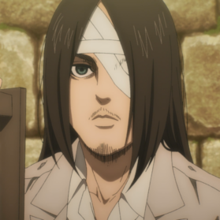
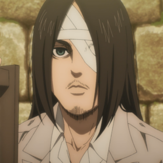

Employment
Place of employment
Employment History to be listed here.
  < EREN JAEGER
 < EREN JAEGER
Name: Eren Jaegar;
DOB: 2-18-1998;
Address:Shiganshima District;
Phone:123-456-7890;
Email:ih8titans@gmail.com;
Website: Eren Jaeger.com
Eren Jaeger is a former member of the Survey Corps. He is the main protagonist of Attack on Titan. He lived in Shiganshina District with his parents and adopted sister Mikasa Ackerman until the fall of Wall Maria, where he impotently witnessed his mother being eaten by a Titan. This event would lead to Eren's intense hatred towards the Titans as he swore to wipe all of them off the face of the Earth.
Employment History to be listed here.
Education details to be listed here.